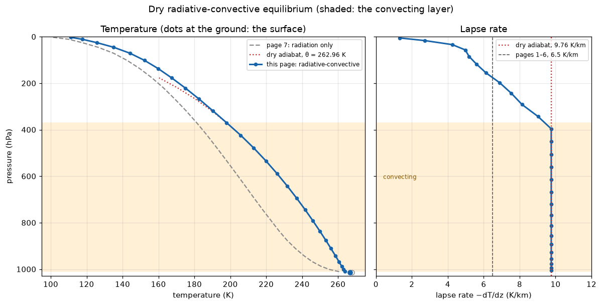

Dry RCE
Chapter 12 of the notes: radiative-convective equilibrium. Every piece is already on the table. Page 7 stepped a column of radiation over a slab ocean, page 8 added the turbulent exchange between the surface and the air, and page 10 introduced the scheme that removes a static instability. This page runs all four together until nothing changes.
It also closes a loop that page 1 opened. Every page from 1 to 6 used a sounding someone typed in: a troposphere cooling at 6.5 K km⁻¹ and an isothermal stratosphere at 200 K. Here nobody types in a profile. The column makes its own, and it does not choose 6.5 K km⁻¹.
This column is dry, and its numbers are not Earth’s
The column has no water vapour at all. Its fourteen-band longwave radiation sees 330 ppm of CO₂ and nothing else, so most of the spectrum is window and the column is a poor greenhouse. It settles at a surface temperature of about 267 K, far below Earth’s 288 K. No number on this page can be compared with the numbers on pages 1 to 6, which all had water vapour in them. Page 12 puts the water back.
You are perturbing a shipped equilibrium
This page does not spin its column up. It loads one: a state that scripts/generate_tour_equilibria.py stepped for 3650 steps of 12 hours, 1825 simulated days, and saved beside this page as _data/rce_dry_equilibrium.npz. Doing that here would take about eight minutes of stepping in your browser, and watching a column find its equilibrium was page 7’s subject. This page is about what the equilibrium looks like and how it responds.
An equilibrium means nothing without the configuration that produced it, so the file carries that configuration with it, and the first cell prints it. The cell builds the component list first, in the open, because the file is only an equilibrium for these components. It runs in a few seconds.
The TOA imbalance is −0.01 W m⁻², the surface imbalance −0.00 W m⁻², and the surface temperature 266.62 K.
The profile it found
The next cell draws the equilibrium. θ, the potential temperature, is page 10’s test for which levels the adjustment has mixed: they share one θ, to rounding error. The cell shades them and draws the dry adiabat through them. The dashed grey profile is page 7’s fourteen-band column, which had radiation and a slab and nothing else, stepped on until its TOA imbalance was zero to three decimal places: 10 000 steps of 12 hours. Its temperatures are written into the cell, because recomputing them here would take about twenty minutes. scripts/experiments/tour_page11_measurements.py radiative recomputes them, and so does page 7’s non-grey cell with N_STEPS = 10000.

This is the figure the cell above produces. Live cells need WebAssembly; if your browser blocks it, the static version is here.
Read the right panel first. Through the shaded layer the lapse rate is a vertical line at 9.76 K km⁻¹. Nothing on this page set that number. The radiation cools the air aloft and the surface heats the air below, until θ falls with height. The adjustment then mixes the unstable air back to a single θ, and a single θ is the dry adiabat. So wherever the column convects, it sits on g/c_p. The next cell measures it.
In the shipped state, the layer from 1010 to 370 hPa, the lowest level upward, sits on the dry adiabat, at 9.76 K km⁻¹. That is half as steep again as the 6.5 K km⁻¹ pages 1 to 6 assumed, and Earth’s troposphere is close to 6.5. Page 12 will show where the difference comes from.
The layer holds still. Over 30 days of stepping at the 12-hour timestep it runs from the lowest level to 370 hPa on every one of the 60 steps, at 9.76 K km⁻¹, and the surface temperature does not move in its third decimal place (scripts/experiments/tour_page11_measurements.py convection). This equilibrium is a fixed point, not a cycle.
The tropopause emerges. Above the convecting layer, the lapse rate does not jump to zero at a 200 K floor, as pages 1 to 6 had it. It falls off gradually, to 8.1 K km⁻¹ near 290 hPa and to about 1.3 K km⁻¹ near the model top, and the temperature keeps falling all the way to 111.13 K. There is no temperature minimum. What this column has instead is a level where convection stops and radiation alone sets the profile above. That level is this column’s tropopause, and nothing in the configuration names it.
The air nearest the ground is on the adiabat too, and that is the boundary layer’s doing as much as the adjustment’s. SimpleBoundaryLayer diffuses dry static energy, c_p T + g z, and a uniform dry static energy is the dry adiabat, so where it mixes it pulls the air toward 9.76 K km⁻¹ as well. (A scheme that diffused temperature itself would pull the layers it mixes toward one temperature, a stable profile, and leave a layer near the ground that only the adjustment could undo.) The ground is 2.88 K warmer than the air above it, against 7.14 K in page 7’s column at equilibrium.
Against page 7
Page 7’s column is the same radiation over the same slab, without the boundary layer and the adjustment. At equilibrium its temperature falls at 81.5 K km⁻¹ between its two lowest levels, eight times the dry adiabatic rate, an instability nothing in that column could remove. Adding the two components changed the air far more than the ground. The air warms by up to 23.7 K at 695 hPa, and by about 9 K at the top. (Cell 2 prints +9.93 K there, but the shipped state’s top level has not quite finished its own spin-up: another 10 000 steps cool it by 1.1 K more, and the levels below it by less, tour_page11_measurements.py settle.) The surface cools by only 1.16 K.
Most of the answer is how transparent this atmosphere is. Chill the surface to 1 K, air unchanged, and the OLR falls from 240.01 to 26.95 W m⁻²: the air’s own contribution. The other 213.06 W m⁻², 74 % of σT_s⁴, is the surface shining through. Warming the air from page 7’s profile to this page’s, surface held fixed, raises the OLR by only 3.99 W m⁻². Warming the surface by 1 K, air held fixed, raises it by 3.38 W m⁻², so a surface 1.16 K cooler gives those watts back (tour_page11_measurements.py radiative). The first physics exercise asks you to follow that through.
The list is radiation, surface, boundary layer, adjustment. The first two are tendency components. AdamsBashforth evaluates both on the same start-of-step state and adds their tendencies, so their order within the list changes nothing. The two steppers do run in order, after that update, and their order is a choice.
- Surface, then boundary layer.
stepping.integrateruns every stepper after the tendency update, so the boundary layer always sees the surface temperature this step produced. Its fluxes depend on that temperature, so this is the order you want, and the split into two lists enforces it. - Boundary layer, then adjustment. The boundary layer heats the lowest air every step, which can make it unstable against the air above. The adjustment runs last, so it removes that instability in the same step. Over 30 days of stepping, not one step ended with θ falling with height anywhere in the column.
- The defensible alternative is adjustment first. It removes the instability the radiation created and leaves the boundary layer’s heating for the next step. The equilibrium hardly notices: 1000 steps in that order end with a 30-day mean surface temperature 0.003 K from this order’s. What changes is what a single state looks like. In that order every one of the last 60 steps ended with θ falling with height somewhere between 1010 and 424 hPa (
tour_page11_measurements.py order), so a profile you plot or save is not one the adjustment has seen. The shipped file was made in this page’s order.
The wind relaxation sits at the end of the tendency list, and it cannot be declared with the rest. stepping.wind_relaxation writes its target wind and timescale into the state it will act on, so it can only be built once the state exists: after states.load, on the loaded state.
A curve that has stopped visibly moving is not converged. It may be moving more slowly than you can see. Page 7’s fourteen-band column is the example: after 900 steps its TOA was still 4.9 W m⁻² out of balance, and its surface had another 0.7 K to fall.
budgets.toa_imbalance(state) is absorbed sunlight minus OLR. At equilibrium it is zero, because nothing else can leave the planet. budgets.surface_imbalance is the same account for the surface: sunlight plus downwelling longwave, minus upwelling longwave and the turbulent fluxes. The generator called the shipped state converged when two tests passed:
- |TOA imbalance| < 0.5 W m⁻²;
- the mean surface temperature over the last 1000 steps within 0.02 K of the mean over the 1000 before.
Why a trend and not a tighter imbalance? Because a small imbalance says the column is nearly balanced, not that it has stopped moving, and a column that cannot reach zero at all, like page 12’s, would never pass a tighter one. The trend test asks the question that matters directly. This column passes both easily: the first cell’s −0.01 and −0.00 W m⁻² hold to the last digit from step to step. The next cell still compares 30-day means rather than single steps, the safe habit for any run that might still wobble.
The knob: CO₂
CO2_FACTOR below: what the CO₂ is multiplied by. N_STEPS is how long to integrate, at the shipped 12-hour timestep.
Page 5 could compute the forcing from doubling CO₂: how much the OLR drops when the gas is added and nothing else changes. It could not say how much the surface warms, because nothing in it could respond. This column can. The cell doubles CO₂ in a copy of the equilibrium, prints the instantaneous forcing, and steps the copy until it balances again.
This cell takes a little over two minutes in a browser. That is 1060 steps, 60 of them for the unperturbed column, at about 0.13 s each, measured with the JIT off, the native stand-in for the browser. It prints a line every 100 steps, all at the end.
Doubling CO₂ cuts the OLR by 4.09 W m⁻² at first. The column then warms until the TOA balances again. The surface warms by +1.16 K, comparing 30-day means of the perturbed and unperturbed columns, and it stays within 0.1 K of its new mean from day 120 on. From step 300 on, the TOA imbalance is within 0.3 W m⁻² of zero at every hundredth step. Over the last 30 days the TOA imbalance averages +0.01 W m⁻², and the surface imbalance +0.00 W m⁻². Both budgets close. That is how you know the column has arrived. A curve that looks flat would not tell you.
+1.16 K per doubling is this column’s climate sensitivity, measured. Every kelvin of surface warming bought 3.52 W m⁻² of extra OLR. A blackbody surface at 267 K would buy 4σT³ = 4.30 W m⁻² per kelvin, and warm only 0.95 K. This one warms more because much of the surface’s emission is absorbed on the way up. Warm the surface by 1 K with the air held fixed and the OLR rises by only 3.38 W m⁻², 79 % of 4σT³; the surface alone would have to warm by 1.21 K. The air warms with it and adds a little OLR of its own, which is why the answer is 1.16 K rather than 1.21 K. It is still a small warming, because nothing in this column amplifies it. There is no water vapour to increase as the column warms. Page 12 adds the water.
climt craft: saving and loading a state
The shipped equilibrium arrived through states.save and states.load. You can do the same with the one you just made. The provenance is what makes the file worth having: without it, a reader has a temperature profile and no idea what produced it.
states.load does not unpickle anything. It builds a fresh state for the components you pass it and copies the saved arrays in, one quantity at a time, checking each one’s dimensions and units against what those components expect. A file saved for a different component list, a different grid or a units convention that has since changed fails at a named quantity, instead of loading into something that looks right and is not an equilibrium.
Two things do not travel with the file. The components are not in it, so load it with the same list you saved it from. And the wind relaxation is not a component the file knows about, so after loading, rebuild it on the loaded state with initialise=False, exactly as the first cell did.
Exercises
Physics
A 24 K warmer troposphere for 1.16 K of surface. Against page 7’s column, the convecting column’s air is warmer by up to 23.7 K and its surface cooler by 1.16 K. Use the
olr_nowfunction from the knob cell to find out why so little of the air’s warming reaches the ground. Put page 7’s air,PAGE7_T, over this page’s surface and compute the OLR. Then leave the air alone and set the surface temperature to 1 K: what is left is the air’s own emission, and the rest ofolr_now(state)is the surface shining through. Last, warm the surface by 1 K instead. (You should find about 236.0 W m⁻², against 240.01 W m⁻² forolr_now(state); 26.95 W m⁻² from the air, so 213.06 W m⁻² from the surface, 74 % of σT_s⁴; and 3.38 W m⁻² per kelvin of surface. The air’s warming adds only about 4.0 W m⁻², and a surface 1.16 K cooler removes 1.16 × 3.38 = 3.92 W m⁻², about the same. Why not zero the air instead? Try it: you get 244.61 W m⁻², more than the whole OLR, because this table’s absorption depends on temperature, and 1 K air is far more transparent than the real air. Holding the absorber’s temperature fixed is what makes the split meaningful.)Why 9.76, when Earth is close to 6.5? Nothing on this page can make the convecting layer steeper or shallower than g/c_p: the adjustment mixes to a single θ, and a single θ is the dry adiabat. What would a rising parcel have to be carrying to cool more slowly than g/c_p as it rises? What happens to that when the parcel cools? Page 12 answers it.
Code
Halve CO₂. Set
CO2_FACTOR = 0.5and re-run the knob cell. The forcing from CO₂ is roughly logarithmic in concentration, so if the response is too, halving should cool the surface by about as much as doubling warmed it. (It cools by 1.12 K, over 30-day means, against +1.16 K for doubling, so the response is close to symmetric in log CO₂.)Take the adjustment out. Run the knob cell with
CO2_FACTOR = 1.0, and withstepper[:-1]in place ofstepperin itsstepping.integratecall, which dropsDryConvectiveAdjustment. Does the column go back to page 7’s profile? (No. The lowest layer turns superadiabatic, 14.3 K km⁻¹, and the ones above it slightly so, but the surface temperature moves by only 0.02 K and the TOA settles again, at −0.01 W m⁻². The air stays 3.7 to 23.5 K warmer than page 7’s, because the boundary layer takes over almost all of the adjustment’s job. In an unstable column its depth, chosen by a bulk Richardson number, reaches 8.1 km, and mixing dry static energy that deep is mixing toward the dry adiabat. Take the boundary layer out as well, withstepper[:0], and in the same 1000 steps the air ends between 0.3 and 8.5 K warmer than page 7’s instead. Setperturbed["surface_upward_sensible_heat_flux"]to zero before the loop when you do: nothing else updates it, andSlabSurfacewould go on losing the last value the boundary layer left there, 16.5 W m⁻², for ever.tour_page11_measurements.py noadjusthas the numbers.)
Going deeper
Page 12 loads a moist equilibrium made the same way, with water vapour supplied by the surface and moist convection added to the stack, and asks what latent heat does to the lapse rate this page measured.